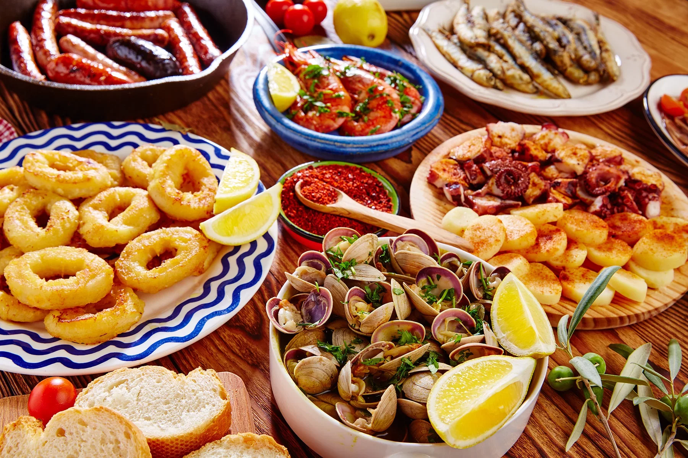

Spain is known for a vibrant and diverse cuisine built on fresh ingredients, bold flavors, and strong regional traditions. Spanish food reflects its Mediterranean climate, rich history, and love for sharing meals socially.
Spanish cuisine is deeply rooted in regional identity, with each area offering distinct specialties shaped by geography and history. Olive oil, garlic, tomatoes, seafood, rice, and cured meats are essential ingredients found across many dishes. Coastal regions are famous for fresh seafood, while inland areas highlight hearty stews and roasted meats. Iconic dishes like paella from Valencia, tapas culture in cities like Seville, and jamón ibérico showcase the balance between simplicity and flavor. Influences from Roman, Moorish, and Jewish culinary traditions have also shaped Spanish cooking over centuries. More than just food, meals in Spain are social experiences — long lunches, late dinners, and shared plates reflect the country’s strong emphasis on family, community, and enjoying life slowly.
Paella
Jamón

Jamón Ibérico de Bellota
Seafood